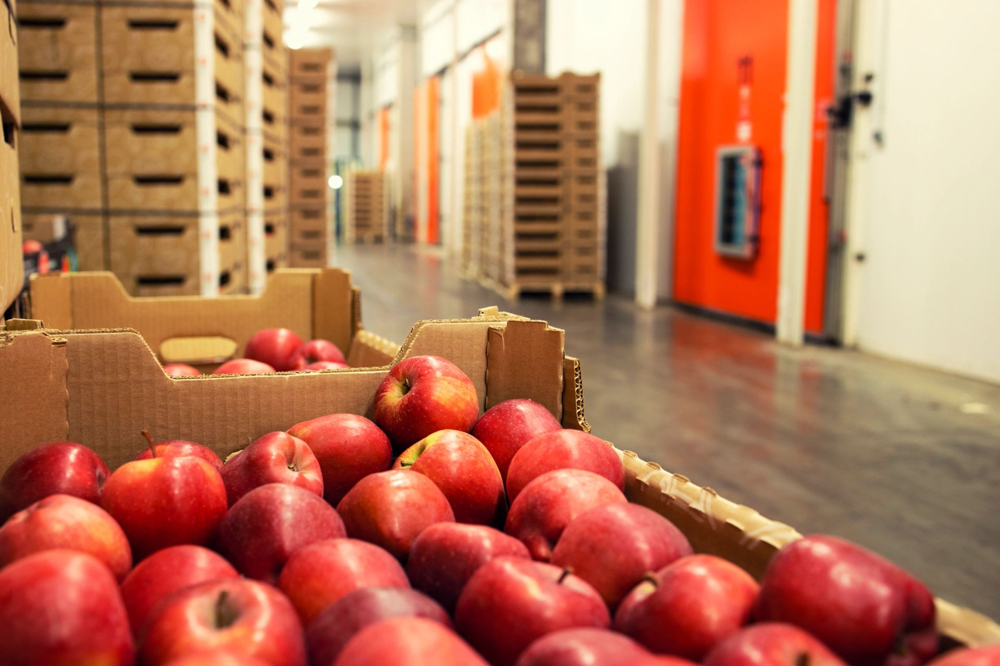

Our story
A trusted service our partners rely on.
At Fiesta Fresh, we deliver more than just fresh produce. We provide a trusted service that our partners can rely on. We leverage our experience along with comprehensive logistics solutions.
Our integrated approach not only enhances reliability and efficiency but also empowers our partners to grow confidently with us as their dedicated fresh produce marketer.
